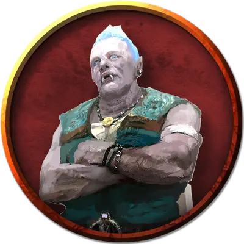

Молодой облачный великан
Young Cloud Giant
Огромный Великан, хаотично-злой

Класс Доспеха 13 (природный доспех)
Хиты 105 (10к12 + 40)
Скорость 40 футов
| мод | спас | ||
|---|---|---|---|
| СИЛ | 21 | +5 | +5 |
| ЛОВ | 8 | −1 | −1 |
| ТЕЛ | 19 | +4 | +4 |
| мод | спас | ||
|---|---|---|---|
| ИНТ | 10 | +0 | +0 |
| МДР | 12 | +1 | +1 |
| ХАР | 12 | +1 | +1 |
Навыки Восприятие +4, Проницательность +4
Чувства пассивное Восприятие 14
Языки Общий, Великаний
Опасность 5 (1800 опыта)
Бонус мастерства +3
Особенности
Тонкий нюх. Великан совершает с преимуществом проверки Мудрости (Восприятие), полагающиеся на обоняние.
Врождённое колдовство. Базовой характеристикой великана является Харизма (Сл спасброска от заклинания 15; +7 к попаданию атаками заклинаниями). Он может накладывать следующие заклинания, не нуждаясь в материальных компонентах:
• Неограниченно: обнаружение магии [detect magic], свет [light], туманное облако [fog cloud];
• 3/день каждое: падение пёрышком [feather fall], полёт [fly], телекинез [telekinesis], туманный шаг [misty step];
• 1/день каждое: власть над погодой [control weather], газообразная форма [gaseous form].
Действия
Мультиатака. Великан совершает две атаки палицей.
Палица. Рукопашная атака оружием: +8 к попаданию, досягаемость 10 футов, одна цель. Попадание: Дробящий урон 18 (3к8 + 5).
Камень. Дальнобойная атака оружием: +8 к попаданию, дистанция 60/240 футов, одна цель. Попадание: Дробящий урон 21 (3к10 + 5).